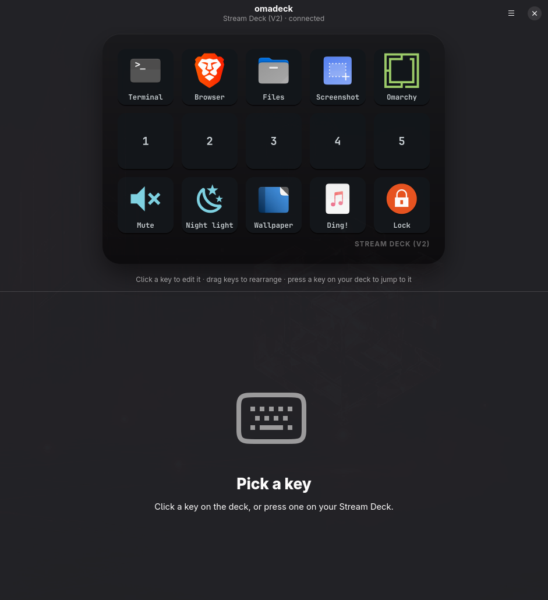

omadeck makes the Stream Deck feel like it shipped with Omarchy. Launch apps, run scripts,
play sounds, open sites and drive Hyprland — with your theme painted on every key.
Written in Rust. Lives in 9 MB.
Launch appPick from your installed apps — icon and name come along. Launched through uwsm-app, exactly like Omarchy does.
Run scriptAny executable, optionally in a terminal so you can watch it run.
Play soundStraight to PipeWire with per-key volume.
Open websiteOne click fetches the site's icon for the key.
HyprlandLua dispatchers or classic syntax — workspace 3 just works on Lua-config Hyprland.
Theme-aware by default
Backgrounds, labels, glyphs and the press ring come from your Omarchy theme — and follow it live when you switch.
Icons your way
PNG, JPEG, SVG, WebP — or any Nerd Font glyph tinted in your accent colour. Labels render in your Omarchy font.
Live, tactile editing
Edits land on the hardware as you type. Drag to rearrange. Press a physical key and the editor jumps to it.
Featherweight
A Rust daemon using ~9 MB and 0% CPU at idle. Survives replugs and keeps your last good layout through config typos.
Scriptable
omadeckd press 3 fires a key from any script or Hyprland binding. list and snapshot round out the CLI.
Portable
One folder — ~/.config/omadeck — holds the layout and every icon. Copy it to your next machine and go.
How it works
Two small programs. One plain-text file.
The configurator only ever writes the config file. The daemon watches it — and your theme — and repaints. Both render keys with the same Rust code, so the preview is the hardware.
The configurator
Click a key. Make it yours.
A native libadwaita app that tiles beautifully under Hyprland. Pick an app and its icon arrives with it. Pick a site and grab its favicon. Paste a Nerd Font glyph and it's tinted with your accent colour.
Drag keys to rearrange
Press a physical key to jump to it
▶ to test any action from the editor
Starts the daemon for you if it isn't running

Plain text, forever
Your deck is one TOML file.
Edit it by hand, keep it in your dotfiles, diff it in git. The daemon reloads the moment you save — and a typo never blanks your deck; it keeps the last good layout.
Prefer the command line? omadeckd press 3 fires a key from any script or Hyprland binding, and omadeckd snapshot deck.png renders your layout.
git clone https://github.com/rbrady/omadeck && cd omadeck && scripts/install.sh
Builds a release binary, adds a launcher entry, enables the omadeckd user service, and installs a udev rule only if your user can't already reach the deck.
3 Open omadeck
Super + Space → omadeck. Your deck lights up with the starter layout.